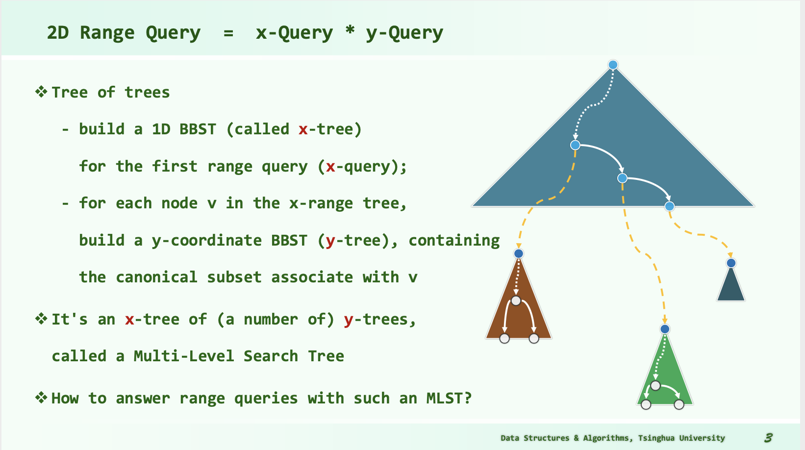

DSA01
1. Tricks
1.1 IO
inline char nchar()
{ // read a large amount of char to speed up reading
// the codes below are widely spread and applied so the author is uncertain
static const int bufl = 1 << 22;
static char buf[bufl], *a, *b;
return a == b && (b = (a = buf) + fread(buf, 1, bufl, stdin), a == b) ? EOF : *a++;
}
template<class T> inline T getnum()
{ // read numbers of type T based on nchar()
T x = 0; bool f = 1; char c = nchar();
for(; !isdigit(c); c = nchar()) if (c == '-') f = 0;
for(; isdigit(c); c = nchar()) x = x * 10 + c - 48;
return f ? x : -x;
}
Disable the synchronization between C++ streams and standard C stream to speed up C++ streams.
std::ios::sync_with_stdio(false);
1.2 Gprof - Performance Analysis Tool
g++ main.cpp -o main -pg # use "-pg" compiler options
./main
gprof ./main > report.txt
P.S.
clang: error: the clang compiler does not support -pg option on versions of OS X 10.9 and later
1.3 Timespec
timespec start, end;
clock_gettime(CLOCK_MONOTONIC, &start);
// ...
clock_gettime(CLOCK_MONOTONIC, &end);
double deltaT = (end.tv_sec - start.tv_sec) * 1e3 + (end.tv_nsec - start.tv_nsec) * 1e-6; //计算程序执行时间，单位为ms
2. Data Structure
2.1 Complete Binary Tree
Complete binary tree can be stored as an array.
2.1.1 Construction
CAUTION: A complete tree with n leaves need an array with "_size" to store.
\(\_size = 2 * bottomSize - 1, bottomSize = 2^{min(k)}\) where \(2^k \geq n, k \in N\).
2.1.2 Visit
Given a node with index i, leftChild = 2 * i + 1, rightChild = 2 * i + 2.
2.2 Binary Search Tree
left springs <= node <= right springs
inorder tranversal sequence: non-decreasing
2.3 Balanced BST
2.4 KD-Tree
2.4.1 Requirements
2.4.1.1 1D Range Query
Count the number of points belong to I = (x1, x2] among P = { p1, ... pn } (or to report the points of \(I \cap P\) ).
We're not satisfied by \(O(n)\) !
It can be solved by binary search on a sorted (\(O(nlogn)\)) vector or array.
For each query, the complexity is \(O(logn + r)\).
2.4.1.2 2D Range Query
For higher dimension occasions, the binary search doesn't work. Somebody may consider performing binary search on each dimension one by one. But, the complexity can be very bad. (You may select nearly n points when searching on the first dimension. However, when it comes to the 2nd dimension, the remained points may be r << n. But your complexity is \(O(n)\) , which is expensive for r.)
So we need an advanced DS, 2D-Tree.
2.4.2 1D-Tree
2.4.2.1 Data Structure
A balanced binary search tree.
Input data are stored in leaves. Inside nodes store the maximum value in the left child tree.

2.4.2.2 Query Algorithm
Search(x): returns the maximum key not greater than x
Lowest Common Ancestor: LCA(x, y) = sub_root
Report the points inside [x, y]:
Starting from LCA:
Go to x (by turn left as much as possible):
Ignore turning right;
For each turning left, report the right subtree;
Go to y (by turn right as much as possible):
Ignore turning left;ss
For each turning right, report the left subtree;
2.4.2.3 Complexity
Preprocessing: \(O(nlogn)\);
Storage: \(O(n)\);
Query: \(O(logn)\);
2.4.3 2D-Tree
2.4.3.1 Data Structure
Balanced Binary Search Tree.
Divide the k-dim space to regions dimension by dimension.
2.4.3.2 Algorithm
2.4.3.2.1 Build
build(set P, depth):
if P.size == 1: // base
return createLeaf(P)
else:
root = createKdNode()
root->splitDirection = dimension[depth % k]
root->splitLine = FindMedian(root->splitDirection, P) // nth_element; Complexity: O(n)
P1, P2 = Divide(P, root->splitDirection, root->splitLine)
root->lChild = buildKdTree(P1, d + 1)
root->rChild = buildKdTree(P2, d + 1)
return root
Time: \(T(n) = 2*T(\frac{n}{2}) + O(n) \Rightarrow T(n) = O(nlogn)\)
Storage: \(1 + 2 + ... + O(2^{logn}) = O(n)\)
Bounding box Optimization:
2.4.3.2.2 Query - KdSearch(v, R)
Search starts at v; query range is R
Key idea: Recurse in when there's intersection. Report it when it is enclosed.
kdSearch(v, R):
if v is leaf:
if v in R:
report(v)
if v->lChild in R:
reportSubtree(v->lChild)
else if v->lChild have intersection with R:
kdSearch(v->lChild, R)
if v->rChild in R:
reportSubtree(v->lChild)
else if v->rChild have intersection with R:
kdSearch(v->rChild, R)
Time: No more than 2 of the 4 grandchildren of each node will recurse!
\(Q(n) = 2 + 2Q(n/4), Q(1) = O(1) \Rightarrow Q(n) = O(\sqrt{n})\)
Report + Search: \(O(r + \sqrt{n})\)
2.5 Multi-Level Search Tree
2.5.1 Data Structure

2.5.2 Construct
2.5.3 Query
2.6 Range Tree
2.7 Interval Tree
Application: Stabbing Query. Which intervals enclose the given point?
2.7.1 Data Structure


2.7.2 Construction
\(O(nlogn)\)
Node
{
Node* leftChild
Node* rightChild
mid_point
starts = list of intervals overlapping mid_point sorted by left endpoints
ends = list of intervals overlapping mid_point sorted by right endpoints
}
Sort the intervals by two approaches:
begin points increasing
end points decreasing
ConstructIntervalTree(vector<Interval> intervals):
if intervals.size == 0:
return nullptr
Node node
vector<Num> P = endpoints of intervals // P.size = 2 * intervals.size
node.mid_point = median in P
left_intervals, right_intervals
for interval in intervals:
if interval is on the left of mid_point:
left_intervals += interval
else if interval is on the right of mid_point:
right_intervals += interval
else: // overlapping
node.starts += interval, node.ends += interval
sort node.starts increasingly by left endpoints
sort node.ends decreasingly by right endpoints
node.leftChild = ConstructIntervalTree(left_intervals)
node.rightChild = ConstructIntervalTree(right_intervals)
return node
2.7.3 Query
\(O(r+logn)\)
queryIntervalTree(Node v, Num q):
if (!v) return
if q < v.mid_point:
// report intervals in v.intervals overlapping q
for interval in v.starts:
if interval.start <= q: report interval
else: break
queryIntervalTree(v.leftChild, q)
else if v.mid_point < q:
// report intervals in v.intervals overlapping q
for interval in v.ends:
if q <= interval.end: report interval
else: break
queryIntervalTree(v.rightChild, q)
else:
report v.intervals
2.8 Segment Tree
2.8.1 Data Structure
2.8.2 
2.8.3 Construction
Segment tree can be derived from complete binary tree.
2.8.3.1 Determine the Elementary Intervals
Given some intervals, we use "cursors" or partitions to determine the elementary intervals(EI). A cursor can be regarded as a partition which splits a pair of continuous number, like: \(5 | 6\).
From an interval \([x_1, y_1]\), we get a pair of cursors \(c_1 = x_1 - 1, c_2 = y_1\). Compared to endpoints of an interval, cursors can be placed at the left or the right of a number, which distinguishes whether a number is used as a beginning points or an ending points. That's the advantage that matters!
Then, we use sorted and deduplicated cursors to construct EIs.
PreProcessing:
get the cursors from intervals // the number of cursors: O(2n)
sort the cursors // O(nlogn)
deduplicate the cursors // O(n)
for each cursor c[i] (0 <= i <= number of cursors - 1): // the number of EIs: O(2n) = O(n)
get an EI = [ c[i] + 1, c[i + 1] ]
2.8.3.2 Build the Segment Tree
BuildSegmentTree(current node, subset of sorted EIs): // O(n)
range of current node = range of EIs
if EIs.size == 1:
return
else:
BuildSegmentTree(left child of current node, EIs[0: medians])
BuildSegmentTree(right child of current node, EIs[medians : ])
Total costs of building: \(O(nlogn)\)
2.8.4 Insert Intervals
InsertSegmentTree(current node, interval):
if interval encloses range of the node:
store the interval at current node
else:
if interval have intersection with range of the left child of current node:
InsertSegmentTree(left child, interval)
if interval have intersection with range of the right child of current node:
InsertSegmentTree(right child, interval)
When running InsertSegmentTree, at each level, less than 4 nodes are visited (2 stores + 2 recursions). \(\Rightarrow O(logn)\)
2.8.5 Query
QuerySegmentTree(current node, interval):
if interval have no intersections with range of current node:
return
if interval encloses range of current node:
report all intervals stored in the current node
if current node is a leaf:
return
if interval have intersection with range of the left child of current node:
QuerySegmentTree(left child, interval)
if interval have intersection with range of the right child of current node:
QuerySegmentTree(right child, interval)
When querying a point (degraded interval), only 1 node is visited per level, altogether \(O(logn)\) nodes.
Total: \(O(r + logn)\)
2.9 Dictionary - Unordered Map - Hash Map
2.9.1 Hash Function
2.9.1.1 From Mod to MAD
hash(key) = (a * key + b) % M, where M is prime.
2.9.1.2 Polynomial: string -> int
3. Algorithms
3.1 ToLeft
Use cross product to judge whether a point is located at the left of a line.
Line: A(x1, y1) -> B(x2, y2)
Point: C(x3, y3)
Calculate \(\overrightarrow{AB} \times \overrightarrow{AC}\)
// Cross product on two vectors
long long crossProduct(const long long& x1, const long long& y1, const long long& x2, const long long& y2)
{
// (x1, y1) X (x2, y2)
return x1 * y2 - y1 * x2;
}
The codes above are based on the following theorem:
3.2 Bi-Connected Components
Articulation Point: cut-vertex
Bi-connected graph: graph without any Articulation Point \(\Rightarrow\) at least two ways between any two points ???
Bi-connected components: maximal bi-connected graph; Any connected graph decomposes into a tree of biconnected components.
3.2.1 Algorithm via DFS
4. Complexity Analysis
4.1 Lower Bound
4.1.1 Algebratic Decision Tree
4.1.1.1 Comparison Tree